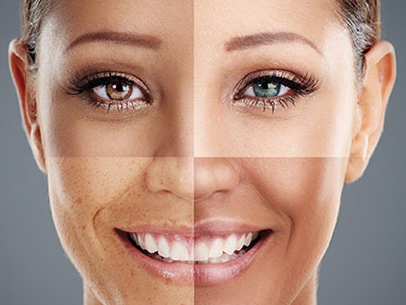

PELE NORMAL
A pele normal possui textura saudável e equilíbrio entre água e sebo, o ideal e saudável para a pele.
Ou seja: produz gordura na quantidade certa, sem excesso de brilho ou de ressecamento.
Com poros pequenos e pouco evidentes, sua aparência é aveludada e com viço, tendo poucas imperfeições.
É essencial manter a pele dessa forma mantendo esse equilíbrio, cuidando da higienização, hidratação
e da proteção solar. Um dos cuidados mais importantes é que nessas pessoas, na região dos olhos,
o aparecimento de rugas é mais intenso. Esse tipo de pele deve ter a rotina igual a de todos os
outros: higienizar, tonificar, hidratar e proteger, para manter-se saudável e sem manchas.

Características da pele Normal
Vamos descobrir os pontos que formam uma pele normal?
-
Tonalidade rosada: sabe aquele coradinho de saudável? aquele viço? a pele normal
é assim naturalmente, sem precisar de blush.
-
Naturalmente hidratada: a pele normal tem uma capacidade de retenção hídrica na medida, que
absorve a água e os produtos, mas não produz oleosidade.
-
Poros, cadê?: os poros de quem tem a pele normal são quase imperceptíveis, assim como na
pele seca, porém ela também é elástica e homogênea.
-
Textura aveludada: já ouviu falar em pele de pêssego? é exatamente a definição
da textura de uma pele normal - macia e uniforme.
Se identificou? Então bora para o passo a passo de cuidados para o seu tipo de pele!
Passo a passo de como cuidar da Pele Normal
Rotina Diurna
-
Limpar: como a pele normal é bem equilibrada,invista em um sabonete ou gel de limpeza mais básico,
que limpe de forma suave e não vá retirar
a oleosidade natural da sua pele, gerando um desequilíbrio ou efeito rebote. Os líquidos e com
extratos naturais são uma boa opção.
-
Hidratar: já na hora de escolher um hidratante, a dica é evitar os muito umectantes e potentes, para
não sobrecarregar a pele e os poros. Um hidratante com textura de sérum é um meio-termo bacana para você
aplicar em todo o rosto!
-
Proteger: o protetor é essencial, você já deve saber… Para a pele normal, o mais importante é escolher
um produto não comedogênico, que proteja, deixe um toque macio e ao mesmo tempo seco e não cause o
entupimento dos poros. O FPS deve ser 30 ou mais e a aplicação diária, sem exagero ou economia.
Rotina Noturna
-
Limpar: se estiver usando maquiagem, retire-a com um produto e movimentos suaves. Depois, é hora
de lavar o rosto com o mesmo sabonete da sua rotina da manhã para completar a limpeza da sua pele.
-
Tratar: essa etapa não é obrigatória, diária ou sempre igual, afinal cada tratamento tem
um intervalo recomendado, mas eles podem complementar seu skincare ou suprir alguma demanda recente da
sua pele. Aqui entra, por exemplo, a esfoliação ou a máscara facial.
-
Hidratar: para fechar, não podia faltar a hidratação, que equilibra a ação da limpeza e dos
tratamentos mais invasivos feitos anteriormente, mantendo a textura uniforme e aveludada da sua pele.
Use o mesmo hidratante da rotina diurna e aí é só dormir para descansar o corpitcho e renovar as energias.
skin types